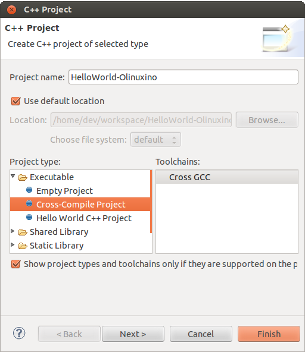

Programming
Table of Contents
Preparing Programming Environment
Main IDE
Install Summary
- Add Files
sudo apt-get install gcc g++ make libncurses5-dev
- Add repository 1
- Backup List
sudo cp /etc/apt/sources.list /etc/apt/sources.list.backup
- Add the following line to /etc/apt/sources.list
deb http://www.emdebian.org/debian/ squeeze main
- Update Packages
sudo apt-get update; sudo apt-get upgrade;
- Backup List
- Install the following packages:
sudo apt-get install linux-libc-dev-armel-cross sudo apt-get install libc6-armel-crossb sudo apt-get install libc6-dev-armel-cross sudo apt-get install binutils-arm-linux-gnueabi sudo apt-get install gcc-4.4-arm-linux-gnueabi sudo apt-get install g++-4.4-arm-linux-gnueabi sudo apt-get install uboot-mkimage
Install Qt Summary
- Install qtcreator
sudo apt-get install qtcreator
- Download Qt libraries 4.8.4 for embedded Linux (226 MB) from http://qt-project.org/downloads.
Installing Qt for Embedded Linux
- This document describes how to install Qt for Embedded Linux in your development environment:
- Step 1: Unpacking the Archive
- First uncompress the archive in the preferred location, then unpack it:
cd <anywhere>
gunzip qt-everywhere-opensource-src-4.8.4.tar.gz; tar xf qt-everywhere-opensource-src-4.8.4.tar;
- This document assumes that the archive is unpacked in the following directory:
~/qt-everywhere-opensource-src-4.8.4
- This document assumes that the archive is unpacked in the following directory:
- First uncompress the archive in the preferred location, then unpack it:
cd <anywhere>
- Step 2: Building the Library
- Before building the Qt for Embedded Linux library, run the ./configure script to configure the library for your development architecture.
./configure
- You can list all of the configuration system's options by typing
./configure -embedded -help
- The Configuration Options for Qt page gives a brief overview of these.
- Note that by default, Qt for Embedded Linux is configured for installation in the /usr/local/Trolltech/QtEmbedded-4.8.4 directory, but this can be changed by using the -prefix option. Alternatively, the -prefix-install option can be used to specify a "local" installation within the source directory.
- The configuration system is also designed to allow you to specify your platform architecture:
cd ~/qt-everywhere-opensource-src-4.8.4 ./configure -embedded [architecture]- In general, all Linux systems which have framebuffer support can use the generic architecture. Other typical architectures are x86, arm and mips.
- Note: If you want to build Qt for Embedded Linux for use with a virtual framebuffer, pass the -qvfb option to the configure script.
- You can list all of the configuration system's options by typing
- To create the library and compile all the demos, examples, tools, and tutorials, type:
make
- On some systems the make utility is named differently, e.g. gmake. The configure script tells you which make utility to use.
- If you did not configure Qt for Embedded Linux using the -prefix-install option, you need to install the library, demos, examples, tools, and tutorials in the appropriate place. To do this, type:
su -c "make install"- and enter the root password.
- Note: You can use the INSTALL_ROOT environment variable to specify the location of the installed files when invoking make install.
- Before building the Qt for Embedded Linux library, run the ./configure script to configure the library for your development architecture.
- Step 3: Adjusting the Environment Variables
- In order to use Qt for Embedded Linux, the PATH variable must be extended to locate qmake, moc and other Qt for Embedded Linux tools, and the LD_LIBRARY_PATH must be extended for compilers that do not support rpath.
- To set the PATH variable, add the following lines to your .profile file if your shell is bash, ksh, zsh or sh:
PATH=/usr/local/Trolltech/QtEmbedded-4.8.4/bin:$PATH export PATH
- In case your shell is csh or tcsh, add the following line to the .login file instead:
setenv PATH /usr/local/Trolltech/QtEmbedded-4.8.4/bin:$PATH - If you use a different shell, please modify your environment variables accordingly.
- In case your shell is csh or tcsh, add the following line to the .login file instead:
- For compilers that do not support rpath you must also extend the LD_LIBRARY_PATH environment variable to include /usr/local/Trolltech/QtEmbedded-4.8.4/lib. Note that on Linux with GCC, this step is not needed.
- Step 4: Building the Virtual Framebuffer
- For development and debugging, Qt for Embedded Linux provides a virtual framebuffer as well as the option of running Qt for Embedded Linux as a VNC server.
- For a description of how to install the virtual framebuffer and how to use the VNC protocol, please consult the documentation at:
- The Virtual Framebuffer
- The VNC Protocol and Qt for Embedded Linux
- Note that the virtual framebuffer requires a Qt for X11 installation. See Installing Qt for X11 Platforms for details.
- The Linux framebuffer, on the other hand, is enabled by default on all modern Linux distributions.
- For information on older versions, see http://en.tldp.org/HOWTO/Framebuffer-HOWTO.html.
- To test that the Linux framebuffer is set up correctly, use the program provided by the Testing the Linux Framebuffer document.
Cross-Compiling Qt for Embedded Linux Applications
- Cross-compiling is the process of compiling an application on one machine, producing executable code for a different machine or device. To cross-compile a Qt for Embedded Linux application, use the following approach:
- Note: The cross-compiling procedure has the configuration process in common with the installation procedure; i.e., you might not necessarily have to perform all the mentioned actions depending on your current configuration.
- Step 1: Set the Cross-Compiler's Path
- Specify which cross-compiler to use by setting the PATH environment variable. For example, if the current shell is bash, ksh, zsh or sh:
export PATH=path/to/cross/compiler:$PATH
- Specify which cross-compiler to use by setting the PATH environment variable. For example, if the current shell is bash, ksh, zsh or sh:
- Step 2: Create a Target Specific qmake Specification
- The qmake tool requires a platform and compiler specific qmake.conf file describing the various default values, to generate the appropriate Makefiles. The standard Qt for Embedded Linux distribution provides such files for several combinations of platforms and compilers. These files are located in the distribution's mkspecs/qws subdirectory.
- Each platform has a default specification. Qt for Embedded Linux will use the default specification for the current platform unless told otherwise. To override this behavior, you can use the configure script's -platform option to change the specification for the host platform (where compilation will take place).
- The configure script's -xplatform option is used to provide a specification for the target architecture (where the library will be deployed).
- For example, to cross-compile an application to run on a device with an ARM architecture, using the GCC toolchain, run the configure script at the command line in the following way:
./configure -embedded arm -xplatform qws/linux-arm-g++ <other options>
- If neither of the provided specifications fits your target device, you can create your own. To create a custom qmake.conf file, just copy and customize an already existing file. For example:
cp path/to/QtEmbedded/mkspecs/qws/linux-mips-g++/... path/to/QtEmbedded/mkspecs/qws/linux-myarchitecture-g++/...
- Note: When defining a mkspec for a Linux target, the directory must be prefixed with "linux-". We recommend that you copy the entire directory.
- Note also that when providing you own qmake specifcation, you must use the configure script's -xplatform option to make Qt for Embedded Linux aware of the custom qmake.conf file.
- If neither of the provided specifications fits your target device, you can create your own. To create a custom qmake.conf file, just copy and customize an already existing file. For example:
- Step 3: Provide Architecture Specific Files
- Starting with Qt 4, all of Qt's implicitly shared classes can safely be copied across threads like any other value classes, i.e., they are fully reentrant. This is accomplished by implementing reference counting operations using atomic hardware instructions on all the different platforms supported by Qt.
- To support a new architecture, it is important to ensure that these platform-specific atomic operations are implemented in a corresponding header file (qatomic_ARCH.h), and that this file is located in Qt's src/corelib/arch directory.
- For example, the Intel 80386 implementation is located in
src/corelib/arch/qatomic_i386.h.
- See the Implementing Atomic Operations documentation for details.
- Step 4: Provide Hardware Drivers
- Without the proper mouse and keyboard drivers, you will not be able to give any input to your application when it is installed on the target device. You must also ensure that the appropriate screen driver is present to make the server process able to put the application's widgets on screen.
- Qt for Embedded Linux provides several ready-made mouse, keyboard and screen drivers, see the pointer handling, character input and display management documentation for details.
- In addition, custom drivers can be added by deriving from the QWSMouseHandler, QWSKeyboardHandler and QScreen classes respectively, and by creating corresponding plugins to make use of Qt's plugin mechanism (dynamically loading the drivers into the server application at runtime). Note that the plugins must be located in a location where Qt will look for plugins, e.g., the standard plugin directory.
- See the How to Create Qt Plugins documentation and the Plug & Paint example for details.
- Step 5: Build the Target Specific Executable
- Before building the executable, you must specify the target architecture as well as the target specific hardware drivers by running the configure script:
cd path/to/QtEmbedded ./configure -embedded <architecture> -qt-kbd-<keyboarddriver> -qt-mouse-<mousedriver> -qt-gfx-<screendriver>- It is also important to make sure that all the third party libraries that the application and the Qt libraries require, are present in the tool chain.
- In particular, if the zlib and jpeg libraries are not available, they must be included by running the configure script with the -L and -I options.
- For example:
cd path/to/QtEmbedded ./configure <other options> -L /path/to/libjpeg/libraries -I /path/to/libjpeg/headers- The JPEG source can be downloaded from http://www.ijg.org/. The Qt for Embedded Linux distribution includes a version of the zlib source that can be compiled into the Qt for Embedded Linux library. If integrators wish to use a later version of the zlib library, it can be downloaded from the http://www.gzip.org/zlib/ website.
- For example:
- Then build the executable:
cd path/to/myApplication qmake -project qmake make - That's all. Your target specific executable is ready for deployment.
See also: Qt for Embedded Linux Architecture and Deploying Qt for Embedded Linux Applications.
- Before building the executable, you must specify the target architecture as well as the target specific hardware drivers by running the configure script:
QT
Overview 2
Qt for Embedded Linux applications write directly to the framebuffer, eliminating the need for the X Window System and saving memory. The Linux framebuffer is enabled by default on all modern Linux distributions.
Cross Compiling 3
Step 1: Set the Cross-Compiler's Path
- Specify which cross-compiler to use by setting the PATH environment variable. For example, if the current shell is bash, ksh, zsh or sh:
export PATH=path/to/cross/compiler:$PATH
Step 2: Create a Target Specific qmake Specification
- The qmake tool requires a platform and compiler specific qmake.conf file describing the various default values, to generate the appropriate Makefiles.
- The standard Qt for Embedded Linux distribution provides such files for several combinations of platforms and compilers.
- These files are located in the distribution's mkspecs/qws subdirectory.
- Each platform has a default specification.
- Qt for Embedded Linux will use the default specification for the current platform unless told otherwise.
- To override this behavior, you can use the configure script's -platform option to change the specification for the host platform (where compilation will take place).
- The configure script's -xplatform option is used to provide a specification for the target architecture (where the library will be deployed).
- For example, to cross-compile an application to run on a device with an ARM architecture, using the GCC toolchain, run the configure script at the command line in the following way:
./configure -embedded arm -xplatform qws/linux-arm-g++ <other options>
- If neither of the provided specifications fits your target device, you can create your own.
- To create a custom qmake.conf file, just copy and customize an already existing file. For example:
cp path/to/QtEmbedded/mkspecs/qws/linux-mips-g++/... path/to/QtEmbedded/mkspecs/qws/linux-myarchitecture-g++/...
- Note: When defining a mkspec for a Linux target, the directory must be prefixed with "linux-". We recommend that you copy the entire directory.
- Note also that when providing you own qmake specifcation, you must use the configure script's -xplatform option to make Qt for Embedded Linux aware of the custom qmake.conf file.
Step 3: Provide Architecture Specific Files
- Starting with Qt 4, all of Qt's implicitly shared classes can safely be copied across threads like any other value classes, i.e., they are fully reentrant.
- This is accomplished by implementing reference counting operations using atomic hardware instructions on all the different platforms supported by Qt.
- To support a new architecture, it is important to ensure that these platform-specific atomic operations are implemented in a corresponding header file (qatomic_ARCH.h), and that this file is located in Qt's src/corelib/arch directory.
- For example, the Intel 80386 implementation is located in src/corelib/arch/qatomic_i386.h.
- See the Implementing Atomic Operations documentation for details.
Step 4: Provide Hardware Drivers
- Without the proper mouse and keyboard drivers, you will not be able to give any input to your application when it is installed on the target device.
- You must also ensure that the appropriate screen driver is present to make the server process able to put the application's widgets on screen.
- Qt for Embedded Linux provides several ready-made mouse, keyboard and screen drivers, see the pointer handling, character input and display management documentation for details.
- In addition, custom drivers can be added by deriving from the QWSMouseHandler, QWSKeyboardHandler and QScreen classes respectively, and by creating corresponding plugins to make use of Qt's plugin mechanism (dynamically loading the drivers into the server application at runtime).
- Note that the plugins must be located in a location where Qt will look for plugins, e.g., the standard plugin directory.
- See the How to Create Qt Plugins documentation and the Plug & Paint example for details.
Step 5: Build the Target Specific Executable
- Before building the executable, you must specify the target architecture as well as the target specific hardware drivers by running the configure script:
cd path/to/QtEmbedded ./configure -embedded <architecture> -qt-kbd-<keyboarddriver> -qt-mouse-<mousedriver> -qt-gfx-<screendriver> - It is also important to make sure that all the third party libraries that the application and the Qt libraries require, are present in the tool chain.
- In particular, if the zlib and jpeg libraries are not available, they must be included by running the configure script with the -L and -I options.
- For example:
cd path/to/QtEmbedded ./configure <other options> -L /path/to/libjpeg/libraries -I /path/to/libjpeg/headers- The JPEG source can be downloaded from http://www.ijg.org/.
- The Qt for Embedded Linux distribution includes a version of the zlib source that can be compiled into the Qt for Embedded Linux library.
- If integrators wish to use a later version of the zlib library, it can be downloaded from the http://www.gzip.org/zlib/ website.
Then build the executable:
cd path/to/myApplication
qmake -project
qmake
make
- That's all. Your target specific executable is ready for deployment.
Programming for A13 in Debian 4
Programming for A13 in debian
- There are 2 main methods to create programs for your A13 board.
- Cross compiling
- Setting up a tool chain to compile on another system, which is typically faster and easier to manage.
- Programming on board
- installing a compiler to compile directly on the board
- The sections below contain instructions for these 2 methods
Cross Compiling
- Cross compiling is usually performed on another linux machine, it seems the most common for doing this is ubuntu.
- If you have compiled the kernel and setup the SD card you will already have most of the tool chain setup on your machine
Setting up the tool chain
- The following instructions are to be performed on a linux machine which is not the A13 board.
- Complete the following steps to setup the tool chain.
- These instructions have been tested on ubuntu only however they may work for other distributions.
- Instructions
- Install eclipse
- Eclipse is a GUI which enables easy compilation and debugging when the appropriate tools have been installed.
- This may be able to be installed using the package manager on your linux system.
- Manual eclipes install
- To manually install the most up to date eclipse perform the following:
- Go to the eclipse download section
- Eclipse download Download to your linux machine the suitable eclipse version.
- Decompress the downloaded file into any directory you like by moving the downloaded file to your desired directory. Open a terminal, go to the directory and decompress with the command
tar -xzvf FILENAME.
- This will create a directory in this location called eclipse Within this directory is the executable eclipse.exe
- It is recommended to create a launcher on your desktop which points to this executable file to make it easier to start.
- To manually install the most up to date eclipse perform the following:
- Manual Java runtime install
- As eclipse is written in java the jave runtime is required as well.
- Download the java runtime.
- Java download page Download the java RPM file that your eclipse version requires.
- Follow the instructions on the java download page beside the download to install
- Your eclipse installation should now start up.
- Install the tool chain
- The instructions contained in this wiki were originally sourced from this page Debugging on embedded using opensource tools
- To compile code for the A13 the ArmV5 tool chain is required.
- Change to super user
# sudo su
- Install compilers, libs and make # apt-get install gcc g++ make libncurses5-dev
- Open the repository file "/etc/apt/sources.list"
- Add the following line
deb http://www.emdebian.org/debian/ squeeze main
- update the repository info
# apt-get update
- install some packages
# apt-get install linux-libc-dev-armel-cross # apt-get install libc6-armel-cross # apt-get install libc6-dev-armel-cross # apt-get install binutils-arm-linux-gnueabi # apt-get install gcc-4.4-arm-linux-gnueabi # apt-get install g++-4.4-arm-linux-gnueabi # apt-get install uboot-mkimage
- The tool chain should now be installed
- Creating a hello world program using eclipse
- Follow this tutorial to create a hello world program Debugging on embedded using opensource tools
- Install eclipse
- Some issues found for some users:
- Issue : After having installed eclipse and the toolchain the path and prefix for the compiler as listed in the example could not be found.
- Solution : Look for the same prefix in a different path, /usr/bin is likely to hold the files.
- Issue : Having built the program and copied it to the A13 board it will not run resulting in "permission denied"
- Solution: Check the permissions for the file are set to allow execution by typing #ls -l . if you dont see a lot of x's (3) in the first column its likely your cause. To change the permissions type #chmod ugo+x FileName
- Issue : executing the file returns "command not found"
- Solution: A library file can not be found this is either /lib/ld-linux.so.3 or /lib/ld-linux-armhf.so.3 . To find the specific one your file is looking for open the executable in a text editor on the first line or 2 you will find the file name its looking for ld-linux.so.3 .
- Issue : After having installed eclipse and the toolchain the path and prefix for the compiler as listed in the example could not be found.
Programming on the A13 board
- Below is a way to create a hello world program on your A13 olinuxino board in a suitable folder create your code file by typing
nano hello.c
- type the following into the program
#include <stdio.h> main () { printf("hello world\n"); } save by pressing ctrl o exit by pressing ctrl x
- compile the program in the command line by typing
gcc -o hello hello.c
OR
gcc-4.6 -o hello hello.c
- make the file executable by typing
chmod z+x hello
- execute the binary file
./hello
- this should print out hello world
- if it has this means you have created a program on your A13 olinuxino board
Debugging
Debugging on embedded using opensource tools (part 1) 5
Overview
- written by brakova on Dec 19 2012 1:39 PM
- Just a few days ago we got a great surprise from Olimex - the new Olinuxino A13! After setting up the SD card, installing Debian and trying the Agilart platform works on it we wanted to set up the developing environment in order to make it easy to cross compile and cross debug C/C++ code that would run on the microcontroller from the host machine.
- So here is how we worked our way through this and managed to get cross compiling and cross debugging working with the standart GCC and GDB on the Olinuxino Micro board. The same set of steps would work for other microcontrollers too, you just need to have the right toolchain.
- First make sure that you have installed the Eclipse CDT plugin. You cal also install the whole Eclipse IDE for C/C++ Developers. Then you need the appropriate arm toolchain against which you can cross compile your code. In order to generate programs that can run and be debugged on the Olinuxino, we need to install the appropriate compiler and debugger and set up the project in Eclipse.
- Setting up your toolchain for cross compilation
- You don't need ARM based host to develop software for Olinuxino. You can do everything with Ubuntu and a proper cross compiler. To produce code that will run on the Olinuxino you need a toolchain with ARMv5 support. Because Ubuntu has default toolchain arm-linux-gnueabi for ARMv7arm, solution is to get proper toolchain from Debian repositories.
sudo apt-get install gcc g++ make libncurses5-dev
- Add the following line to /etc/apt/sources.list
deb http://www.emdebian.org/debian/ squeeze main
- Install the following packages:
sudo apt-get install linux-libc-dev-armel-cross sudo apt-get install libc6-armel-cross sudo apt-get install libc6-dev-armel-cross sudo apt-get install binutils-arm-linux-gnueabi sudo apt-get install gcc-4.4-arm-linux-gnueabi sudo apt-get install g++-4.4-arm-linux-gnueabi sudo apt-get install uboot-mkimage
Set up a GCC Cross compiler project in Eclipse
- Open Eclipse and click on File >> New >> C++ Project
- In the Project Type section select the Cross-compile Project. This is how eclipse will know that we don't want to use the standart gcc but another tooolchain(arm-unknown-linux-gnueabi-gcc).
- When you create the project add a simple main.cpp source file.
- Here we'll do the 'Hello World' in this case 'Hello Olinuxino' project.
- Then go to the project's Settings page and check the cross compiler configuration settings. Have a look at the Path and the Prefix options:

- Then we are ready to build the project. In the console check that Eclipse is using the right gcc toolchain. In this case it should be 'arm-unknown-linux-gnueabi-g++'. If it doesn't work for some reason check that the toolchain is installed correctly by building the preject by manually from the terminal. If for some reason you have problems with the toolchain you can download build it yourself by following this guide from the Archlinux community.
- Get the executable on the Olinuxino. An easy way to do this is usinf sshfs:
sshfs root@olinuxino-hostname:/ ~/olinuxino
- It will ask you for the password - remember that the default one is root. Here we use Olinuxino Micro, but any arm-based microcontroller would be the same. You just need the right toolchain. for Raspberry Pi you even need the exact same toolchain.
- The next part would cover what are the steps you need to do in order to coss debug from your GCC Exclipse project on the Olinuxino Micro.
- Cheers!


Building Debian
Building bootable SD-card with Debian Linux Image for A13-OLinuXino
Info
| Title | Building bootable SD-card with Debian Linux Image for A13-OLinuXino |
| Author | |
| Date | Oct 12 2012 |
| License | |
| URL | http://olimex.wordpress.com/2012/10/12/building-bootable-sd-card-with-debian-linux-image-for-a13-olinuxino/ |
| Accessed | 2013-06-07 |
Article
- Overview
- We ship A13-OLinuXino-WIFI with pre-loaded Android 4.0.3 image on the NAND flash, so it runs out of the box and you can have access to all millions of applications of Google Play.
- For those who want to use and develop on this board with Linux I will explain step by step what they should do to make their own SD-card image which to boot Debian on A13-OLinuXino. Big thanks to Dimitar Gamishev who handheld guided me yesterday through the whole build process so I can share now with you :)
- We assume you have computer with Linux, sorry guys but compiling Linux Kernel on Windows is impossible, so if you come from Windows world, don’t be afraid, you can download and install Ubuntu to your computer on top of Windows so you will have dual OS computer and can use Windows or Linux depend on your preferences.
- 1. Setup of the toolchain
- You should make sure you have the tools for building the Linux Kernel and install them if you don’t have them. To install new software you should be with super user rights so do this to make sure you are:
sudo su
- you will be asked for your password and then your prompt will change to # which means now you are super user, all next commands should be run in this mode
apt-get install gcc-4.6-arm-linux-gnueabi ncurses-dev uboot-mkimage build-essential git
- you will be asked for your password and then your prompt will change to # which means now you are super user, all next commands should be run in this mode
- with this line you make sure you have all tools necessary for the A13 kernel and uboot build: GCC compiler, the kernel config menu, uboot make image, git and other tools for building the kernel
- after the installation you now have all tools to make your very own A13 kernel image
- You should make sure you have the tools for building the Linux Kernel and install them if you don’t have them. To install new software you should be with super user rights so do this to make sure you are:
- 2. Building Uboot
- Allwinner community uboot is maintained by Henrik Nordström aka hno on #freenode irc channel.
- First let’s make the directory where we will build the A13-OLinuXino Linux:
mkdir olinuxino; cd olinuxino - then let’s download the uboot sources from GitHub repository, note there are lot of branches but you have to use sunxi branch, the files are about 70 MB
git clone -b sunxi https://github.com/linux-sunxi/u-boot-sunxi.git
- after the download you should have new directory
cd uboot-allwinner/ - and with this command you can start the uboot build:
make a13_olinuxino CROSS_COMPILE=arm-linux-gnueabi-- as you can see A13-OLinuXino already have support configuration in Allwinner community uboot
- at the end of the process you can check if everything is OK by
ls u-boot.bin spl/sunxi-spl.bin
- if you got these two files everything is complete, well done so far :)
- 3. Building the Kernel
- The Allwinner community Kernel is maintained by Alejandro Mery aka mnemoc on #freenode irc channel.
- Let’s first go back from uboot directory
cd .. - then download the Kernel sources, you should use allwinner-v3.0-android-v2 branch, the sources are about 700 MB so you will have to wait a bit longer with this download:
git clone https://github.com/linux-sunxi/linux-sunxi.git
- after the download go to the kernel directory
cd linux-allwinner/- and compile the a13_configuration:
make ARCH=arm a13_defconfig- as you see A13-OLinuXino have pre-made configuration in the community kernel sources
make ARCH=arm menuconfig- with this command you add/remove different modules for the different peripherials in the kernel, be careful when use this as this may make the kernel not working
- the menuconfig created .config text file, which you can view/edit even with text editor like vi
- if you want to use GPIOs for instance they are not enabled by default and you can do this by adding:
SUN4I_GPIO_UGLY = y inside .config
- as you see A13-OLinuXino have pre-made configuration in the community kernel sources
- then you can contiue with:
make ARCH=arm CROSS_COMPILE=arm-linux-gnueabi- uImage
- and compile the a13_configuration:
- when this finish you will have uImage ready and you can build the kernel modules:
make ARCH=arm CROSS_COMPILE=arm-linux-gnueabi- INSTALL_MOD_PATH=out modules make ARCH=arm CROSS_COMPILE=arm-linux-gnueabi- INSTALL_MOD_PATH=out modules_install
- DONE! At this point you have uboot and kernel builds ready.
- 4. Make the SD-card
- First we have to make the correct card partitions, this is done with fdisk.
- Plug SD card on your SD card reader and do
ls /dev/sd
- then press two times <TAB> you will see list of your sd devices like sda sdb sdc note that some of these devices may be your hard disk so make sure you know which one is your sd card before proceed as you can damage your HDD if you choose wrong sd-device :) once you know which device is your sdcard like sda use it instead the sdX name in the references below:
fdisk -u=sectors /dev/sdX
- then do these steps:
- p
- will list your partitions
- if there are already partitions on your card do:
- d 1
- to delete them all
- n p 1
- create first partition, starting from 2048 and ending to 34815
- beginning 2048 end 34815
- create second partition
- n p 2 enter enter
- then list the created partitions:
- p
- if you did everything correctly you should see something like:
Disk /dev/sdX: 2001 MB, 2001731584 bytes 42 heads, 41 sectors/track, 2270 cylinders, total 3909632 sectors Units = sectors of 1 * 512 = 512 bytes Sector size (logical/physical): 512 bytes / 512 bytes I/O size (minimum/optimal): 512 bytes / 512 bytes Disk identifier: 0×00000000 Device Boot Start End Blocks Id System /dev/sdX1 2048 34815 16384 83 Linux /dev/sdX2 34816 3909631 1937408 83 Linux then write the partititons to the card
- if you did everything correctly you should see something like:
- w
- p
- now we have to prepare the file system on the card:
- the first partition should be vfat as this is FS which Allwinner bootloader understands
mkfs.vfat /dev/sdX1
- the second should be normal Linux EXT3 FS
mkfs.ext3 /dev/sdX2
- the first partition should be vfat as this is FS which Allwinner bootloader understands
- 5. Debian rootfs
- Linux Kernel and Uboot are ready, now we have the Linux distribution rootfs, how to build one is long topic, the good thing is that there are many already pre-built so we can just download one and use.
- exit the kernel directory
cd .. - download debian rootfs:
wget http://hands.com/~lkcl/mele_debian_armhf_minimal.cpio.gz
- mount your sd card EXT3 FS partition:
mount /dev/sdX2 /mnt cd /mnt/ - and unarchive the rootfs
gunzip -c /home/user/olinuxino/mele_debian_armhf_minimal.cpio.gz | cpio -i cd .. sync umount /mnt - at this point you have Debian on your SD card second partition
- 6. Write Uboot and Kernel you build
- mount
mount /dev/sdX1 /mnt/
- copy the Kernel uImage to root directory in partition 1
cp linux-allwinner/arch/arm/boot/uImage /mnt/
- download script.bin from: https://github.com/OLIMEX/OLINUXINO/blob/master/SOFTWARE/A13/script.bin
- and copy in same directory with uImage
- script.bin is text file with very important configuration parameters like port GPIO assignments, DDR memory parameters, Video resolution etc, by changing these parameters in the script.bin you can configure your Linux without need to re-compile your kernel again and again this is smart way Allwinner provide for tweaking A13 Linux Kernel
- write the Uboot
cd uboot-allwinner/ dd if=spl/sunxi-spl.bin of=/dev/sdX bs=1024 seek=8 dd if=u-boot.bin of=/dev/sdX bs=1024 seek=32 sync umount /mnt
- and copy the Kernel modules for partition 2
mount /dev/sdX2 /mnt cd .. cp -a linux-allwinner/out/lib/modules/3.0.42+/ /mnt/lib/modules/. umount /mnt - that’s all folks! now you have SD card ready to boot debian on A13-OLinuXino.
- Connect USB-SERIAL-CABLE-F to UEXT Tx.Rx and GND, put the SD-card in A13-OLinuXino(-WIFI) and apply power supply, you should see Uboot and then Kernel messages on the console
- default username/password is : root / password
- Have fun!
- mount
Build Bootable SD Card with Debian
Info
| Title | |
| Author | |
| Date | |
| License | |
| URL | https://www.olimex.com/wiki/Build_Bootable_SD_Card_with_Debian |
| Accessed |
Article
- Overview
- The A13-OLinuXino-WIFI board ships with pre-loaded Android 4.0.3 image on the NAND flash, so it runs out of the box and you can have access to millions of applications on Google Play.
- There are also prebuilt SD card images that will boot to debian, they are linked to on the main A13 wiki page. These are suitable for anyone that doesn't want special kernel options.
- For those who want to use and develop on this board with Linux and require non standard kernel configurations this wiki explains step by step instructions to create an SD-card image that boots Debian on A13-OLinuXino. Big thanks to Dimitar Gamishev who initially demonstrated the whole build process.
- Note: The content is largely taken from this page of instructions
- building bootable sd card with debian linux image for a13 olinuxino
- U-boot Sunxi Wiki with detailed info
- Contents
- Tools required
- Instructions 2.1 Setup of the toolchain 2.2 Building Uboot 2.3 Building the Kernel 2.4 Format and setup the SD-card 2.5 Debian rootfs 2.6 Write Uboot and Kernel you build
- Software Links
- Tools required
- A13-OLinuXino or A13-OLinuXino-WIFI
- Micro SD card larger than 2g
- A method to check the system worked, VGA screen or serial cable
- A computer that can run linux (These instructions do not work for windows)
- Note: you can install Ubuntu freely to work on a machine that currently has windows. You will have the option to boot to either windows or linux
- Method to read or write to a Micro SD card from this computer.
- An internet connection for the linux computer
- Instructions
- Setup of the toolchain
- You should make sure you have the tools for building the Linux Kernel and install them if you don’t have them. To install new software you should be with super user rights so do this type in a terminal.
sudo su
- you will be asked for your password and then your prompt will change to # which means you are now the super user, all future commands should be run in this mode
- First update apt-get links by typing
apt-get update
- Install the toolchain by typing the following.
apt-get install gcc-4.6-arm-linux-gnueabi ncurses-dev uboot-mkimage build-essential git
- with this line you make sure you have all tools necessary for the A13 kernel and uboot build:
- GCC compiler used to compile the kernal
- The kernel config menu
- uboot make image which is required to allow the SD card to book into the linux image
- Git which allows you to download from the github which holds source code for some of the system
- Some other tools for building the kernel
- with this line you make sure you have all tools necessary for the A13 kernel and uboot build:
- after the installation you now have all tools to make your very own A13 kernel image
- You should make sure you have the tools for building the Linux Kernel and install them if you don’t have them. To install new software you should be with super user rights so do this type in a terminal.
- Building Uboot
- The Allwinner community uboot is maintained by Henrik Nordström aka hno on #freenode irc channel.
- First let’s make the directory where we will build the A13-OLinuXino Linux:
mkdir olinuxino # cd olinuxino
- Then let’s download the uboot sources from GitHub repository, note there are lot of branches but you have to use sunxi branch, the files are about 70 MB
git clone -b sunxi https://github.com/linux-sunxi/u-boot-sunxi.git
- After the download you should have a new directory
cd uboot-allwinner/ - With the following command you can start the uboot build:
make a13_olinuxino CROSS_COMPILE=arm-linux-gnueabi- - As you can see A13-OLinuXino already have support configuration in Allwinner community uboot
- At the end of the process you can check if everything is OK by
ls u-boot.bin spl/sunxi-spl.bin
- If you got these two files everything is complete, well done so far
- Building the Kernel
- The Allwinner community Kernel is maintained by Alejandro Mery aka mnemoc on #freenode irc channel.
- Let’s first go back from uboot directory
cd .. - Then download the Kernel sources, you should use allwinner-v3.0-android-v2 branch, the sources are about 700 MB so you will have to wait a bit longer with this download:
git clone https://github.com/linux-sunxi/linux-sunxi.git
- After the download go to the kernel directory
cd linux-sunxi/ - Compile the a13_configuration:
make ARCH=arm a13_defconfig - as you see A13-OLinuXino have pre-made configuration in the community kernel sources
make ARCH=arm menuconfig - With this command you can add or remove different modules for the different peripherials in the kernel, be careful when use this as this may cause the kernel to not work properly
- The menuconfig created a .config text file, which you can view/edit even with a text editor like vi
- if you want to use GPIOs for instance they are not enabled by default and you can do this by adding:
SUN4I_GPIO_UGLY = y inside .config
- then you can contiue with:
make ARCH=arm CROSS_COMPILE=arm-linux-gnueabi- uImage
- if you want to use GPIOs for instance they are not enabled by default and you can do this by adding:
- when this finish's you will have uImage ready and you can build the kernel modules:
make ARCH=arm CROSS_COMPILE=arm-linux-gnueabi- INSTALL_MOD_PATH=out modules make ARCH=arm CROSS_COMPILE=arm-linux-gnueabi- INSTALL_MOD_PATH=out modules_install
- DONE! At this point you have uboot and kernel builds ready.
- Format and setup the SD-card
- First we have to make the correct card partitions, this is done with fdisk.
- Plug SD card into your SD card reader and enter in the terminal
ls /dev/sd
- Then press two times <TAB> you will see a list of your sd devices like sda sdb sdc note that some of these devices may be your hard disk so make sure you know which one is your sd card before you proceed as you can damage your HDD if you choose the wrong sd-device. You can do this by unplugging your sd card reader and identify which "sd" devices remove from the list.
- Once you know which device is your sdcard like sda use this text instead of the sdX name in the references below:
fdisk -u=sectors /dev/sdX
- then do these steps:
- p
- will list your partitions
- if there are already partitions on your card do:
- d 1
- to delete them all
- n p 1
- create the first partition, starting from 2048 and ending to 34815
- beginning 2048 end 34815
- create second partition
- n p 2 enter enter
- then list the created partitions:
- p
- if you did everything correctly you should see something like:
Disk /dev/sdX: 2001 MB, 2001731584 bytes 42 heads, 41 sectors/track, 2270 cylinders, total 3909632 sectors Units = sectors of 1 * 512 = 512 bytes Sector size (logical/physical): 512 bytes / 512 bytes I/O size (minimum/optimal): 512 bytes / 512 bytes Disk identifier: 0×00000000 Device Boot Start End Blocks Id System /dev/sdX1 2048 34815 16384 83 Linux /dev/sdX2 34816 3909631 1937408 83 Linux
- if you did everything correctly you should see something like:
- w
- then write the partititons to the card
- p
- now we have to format the file system on the card:
- the first partition should be vfat as this is FS which the Allwinner bootloader understands
mkfs.vfat /dev/sdX1
- the second should be normal Linux EXT3 FS
mkfs.ext3 /dev/sdX2
- the first partition should be vfat as this is FS which the Allwinner bootloader understands
- Debian rootfs
- The Linux Kernel and Uboot are ready, now we have the Linux distribution rootfs, how to build one is a long topic, the good thing is that there are many already pre-built so we can just download one and use.
- exit the kernel directory
cd .. - download debian rootfs:
wget http://hands.com/~lkcl/mele_debian_armhf_minimal.cpio.gz
- mount your sd card EXT3 FS partition:
mount /dev/sdX2 /mnt cd /mnt/ - and unarchive the rootfs
gunzip -c /home/user/olinuxino/mele_debian_armhf_minimal.cpio.gz | cpio -i where "user" is the user name of your root user cd .. sync umount /mnt
- at this point you have Debian on your SD card second partition
- Write Uboot and Kernel you build
mount /dev/sdX1 /mnt/
- copy the Kernel uImage to root directory in partition 1
cp linux-allwinner/arch/arm/boot/uImage /mnt/.
- download the script.bin from: https://github.com/OLIMEX/OLINUXINO/blob/master/SOFTWARE/A13/script.bin
- and copy it to the same directory as uImage
- script.bin is a text file with very important configuration parameters like port GPIO assignments, DDR memory parameters, Video resolution etc, by changing these parameters in the script.bin you can configure your Linux without need to re-compile your kernel again and again this is smart way Allwinner provide for tweaking A13 Linux Kernel
- write the Uboot
cd uboot-allwinner/ dd if=spl/sunxi-spl.bin of=/dev/sdX bs=1024 seek=8 dd if=u-boot.bin of=/dev/sdX bs=1024 seek=32 sync umount /mnt
- and copy the Kernel modules for partition 2 # mount /dev/sdX2 /mnt
cd .. cp -a linux-allwinner/out/lib/modules/3.0.42+/ /mnt/lib/modules/. umount /mnt- Now you have an SD card ready to boot debian on A13-OLinuXino.
- Connect USB-SERIAL-CABLE-F to UEXT Tx.Rx and GND, or connect a VGA screen. Put the SD-card in A13-OLinuXino(-WIFI) and apply power, you should see Uboot and then Kernel messages on the console
- default username/password is : root / password
- Setup of the toolchain
- Software Links
- Linux Sunxi to build latest Kernel yourself
- U-boot to build community U-boot
- Building bootable Debian SD card for A13-OLinuXino Original step by step instructions how to make SD card image with above Kernel and U-boot
- Forum post with yet another more up to date explanation how to build SD card
Footnotes:
1 https://help.ubuntu.com/community/Repositories/CommandLine
2 http://qt-project.org/doc/qt-4.8/qt-embedded-linux.html
3 http://qt-project.org/doc/qt-4.8/qt-embedded-crosscompiling.html
4 https://www.olimex.com/wiki/Programming_for_A13_in_debian#Creating_a_hello_world_program_using_eclipse
5 http://www.agilart.com/blog/debugging-on-embedded-using-opensource-tools-part-1